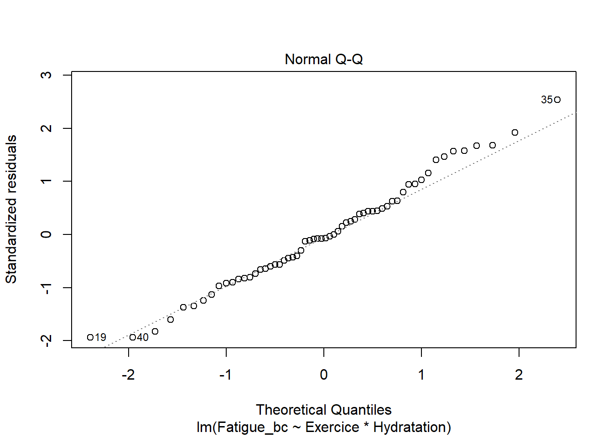

Chapitre 3 ANOVA à 2 facteurs avec R, pratique des apprentissages
Source de cet article ICI
Ce tutoriel dédié à la réalisation d’ANOVA à deux facteurs avec le logiciel R, fait suite à deux premiers articles consacrés à cette approche statistique, l’un d’introduction, l’autre détaillant son fonctionnement.
À travers ce tutoriel vous apprendrez :
- comment explorer vos données,
- comment réaliser une ANOVA à deux facteurs,
- comment vérifier les hypothèses de validité,
- comment interpréter les résultats,
- que faire lorsque l’interaction est significative, et lorsqu’elle ne l’est pas.
3.1 Liste des packages et jeu de données
Les packages utilisés dans ce tutoriel sont les suivants :
library(tidyverse) # dplyr, ggplot2
library(ggpubr) # ggboxplot()
library(car) # Anova() avec carrés de type III
library(Rmisc) # summarySE(), moy et IC essais factoriels
library(rstatix) # shapiro_test(), levene_test()
library(multcomp) # comparaisons par paires TukeyPour illustrer ce tutoriel consacré à l’ANOVA à deux facteurs, je vais utiliser des données simulées supposées issues d’un plan d’expérience visant à observer
- l’Usure de la laine (dans une unité de votre choix) au sein de métiers à tisser,
- en fonction de la Tension du fil (T.Faible / T.Moyenne / T.Élevée) et du type de Laine (Laine.A / Laine.B).
N1 <- 9
Tension <-rep(c("T.Faible", "T.Moyenne", "T.Élevée"), each = 2*N1)
Laine <- rep(rep(c("Laine.A", "Laine.B"), each = N1), 3)
set.seed(42)
L_A <- rnorm(N1, 12, 1)
L_B <- rnorm(N1, 9, 1)
M_A <- rnorm(N1, 7, 1)
M_B <- rnorm(N1, 10, 1)
H_A <- rnorm(N1, 8.5, 1)
H_B <- rnorm(N1, 7, 1)
Usure <- c(L_A, L_B, M_A, M_B, H_A, H_B)
mydata <- data.frame(Usure, Tension, Laine)
mydata <- mydata %>%
mutate(Tension = factor(Tension, levels = c("T.Faible", "T.Moyenne", "T.Élevée")),
Laine = factor(Laine, levels = c("Laine.A", "Laine.B")))
glimpse(mydata)## Rows: 54
## Columns: 3
## $ Usure <dbl> 13.370958, 11.435302, 12.363128, 12.632863, 12.404268, 11.8938~
## $ Tension <fct> T.Faible, T.Faible, T.Faible, T.Faible, T.Faible, T.Faible, T.~
## $ Laine <fct> Laine.A, Laine.A, Laine.A, Laine.A, Laine.A, Laine.A, Laine.A,~3.2 Exploration visuelle
En premier lieu, il est toujours utile de représenter les données pour se faire une première idée avant de réaliser l’ANOVA.
Pour cette étape, l’habitude est d’utiliser des boxplots en ajoutant, par-dessus, les données observées. Cela permet de se rendre compte
- du nombre de données par modalité,
- de leur distribution, plutôt normale, plutôt asymétrique ?
- et de la présence éventuelle d’outliers (valeurs extrêmes).
Ces deux derniers points pouvant biaiser les résultats de l’analyse.
ggplot(mydata, aes(x = Tension, y = Usure, colour = Laine, fill = Laine)) +
geom_point(position = position_jitterdodge(dodge.width = 0.7), size = 2) +
geom_boxplot(alpha = 0.5, position = position_dodge(width = 0.8), fatten = NULL) +
stat_summary(fun.y = mean, colour = "black", position = position_dodge(width = 0.7)) +
#theme_classic() +
ylab("Usure")## Warning: `fun.y` is deprecated. Use `fun` instead.## Warning: Removed 1 rows containing missing values (geom_segment).
## Warning: Removed 1 rows containing missing values (geom_segment).
## Warning: Removed 1 rows containing missing values (geom_segment).
## Warning: Removed 1 rows containing missing values (geom_segment).
## Warning: Removed 1 rows containing missing values (geom_segment).
## Warning: Removed 1 rows containing missing values (geom_segment).## Warning: Removed 6 rows containing missing values (geom_segment).3.3 Calculer les moyennes et leurs intervalles de confiance
Il peut également être intéressant, avant de réaliser l’ANOVA, de calculer les moyennes et leurs intervalles de confiance. Une façon rapide de le faire est d’employer la fonction summarySE() du package Rmisc.
## Tension Laine N Usure sd se ci
## 1 T.Faible Laine.A 9 12.615076 0.8564690 0.2854897 0.6583404
## 2 T.Faible Laine.B 9 8.935897 1.4346080 0.4782027 1.1027374
## 3 T.Moyenne Laine.A 9 6.893546 1.4235480 0.4745160 1.0942359
## 4 T.Moyenne Laine.B 9 9.825706 1.0491770 0.3497257 0.8064689
## 5 T.Élevée Laine.A 9 7.888296 0.9320269 0.3106756 0.7164193
## 6 T.Élevée Laine.B 9 7.338493 0.8753724 0.2917908 0.6728708Une autre façon rapide de le faire est d’employer la fonction ci.mean() du package Publish.
## Laine Tension mean CI-95%
## Laine.A T.Faible 12.62 [11.96;13.27]
## Laine.A T.Moyenne 6.89 [5.80;7.99]
## Laine.A T.Élevée 7.89 [7.17;8.60]
## Laine.B T.Faible 8.94 [7.83;10.04]
## Laine.B T.Moyenne 9.83 [9.02;10.63]
## Laine.B T.Élevée 7.34 [6.67;8.01]Les estimations des intervalles de confiances sont basées sur une distribution t. Elles sont donc biaisées si les données ne suivent pas une loi Normale. Je vous recommande de les considérer uniquement de façon approximative, elles ne servent qu’à se faire une première idée.
L’intérêt d’utiliser la fonction summarySE() c’est qu’on peut ensuite utiliser la sortie pour représenter les moyennes et leurs intervalles de confiance sur un graph.
3.4 Visualisation préliminaire
Je pose p pour éviter le chevauchement sur le graph : décallage horizntal.
p <- position_dodge(0.1)
ggplot(mydata_avg, aes(x = Tension, y = Usure, colour = Laine, group = Laine)) +
geom_errorbar(aes(ymin = Usure - ci, ymax = Usure + ci), width =.1, position = p) +
geom_line(position = p, size = 1) +
geom_point(position = p, size = 2) #+
Les profils se croisent, on s’attend donc à ce que l’interaction soit de type qualitative et significative. Pour plus d’informations sur les interactions, consultez l’introduction à l’ANOVA à 2 facteurs.
Remarque :
Pour calculer des intervalles de confiance robustes, par bootstrap, on peut aussi utiliser les commandes décrites dans l’article Analyses statistiques descriptives de données numériques – partie 2. Il faut le faire pour chaque groupe de croisement des modalités Tension*Laine.
Dans un premier temps, on créé une variable grp correspondant au croisement des modalités des deux facteurs, grâce à la fonction interaction(), package base.
La suite de l’analyse n’est pas présentée pour cet aspect.
3.5 Réalisation de l’ANOVA à deux facteurs
En première approche, on ajuste toujours un modèle ANOVA à deux facteurs avec un terme d’interaction.
Il existe à ce niveau là, une petite difficulté liée au fait que lorsque les effectifs ne sont pas égaux dans chaque groupe (croisement des modalités), la part de variance de l’interaction peut se calculer de plusieurs façons. On parle de carrés de type II ou de type III.
Lorsqu’on ajuste le modèle complet, c’est à dire avec l’interaction, on utilise généralement des carrés de type III.
Pour cela, il est nécessaire de changer les contrastes des deux facteurs dans le modèle
lm()du format par défaut de typecontr.treatment, vers le formatcontr.sum. C’est ce qui permet au logiciel de calculer correctement ces carrés de type III.
Cette modifications des contrastes peut se faire pendant l’ajustement du modèle, ou en amont de celui-ci. Je préfère le faire au moment de l’ajustement.
Remarque :
Lorsque les effectifs sont équilibrés, les résultats des carrés de type III et de type II sont strictement identiques. ici, il ne serait donc pas nécessaire de changer les contrastes. Mais faites le systématiquement pour en prendre l’habitude.
Comme expliqué dans l’article sur l’ANOVA à un facteur, l’ajustement d’une ANOVA peut se faire avec les fonctions lm() ou aov(), mais j’utilise sytématiquement lm(), par habitude.
L’interaction est incluse dans le modèle en employant le signe * entre les deux facteurs :
3.6 Visualisation des résultats
Le package car dispose d’une fonction Anova() (avec un A majuscule) qui permet d’obtenir les résultats avec les carrés de type III.
Attention :
Il faut utiliser la fonction Anova et pas anova, c’est très important, car les deux fonctions ne fournissent pas les mêmes résultats !
## Anova Table (Type III tests)
##
## Response: Usure
## Sum Sq Df F value Pr(>F)
## (Intercept) 4292.9 1 3409.8331 < 2.2e-16 ***
## Tension 98.4 2 39.0605 8.529e-11 ***
## Laine 2.5 1 2.0037 0.1634
## Tension:Laine 98.4 2 39.0954 8.416e-11 ***
## Residuals 60.4 48
## ---
## Signif. codes: 0 '***' 0.001 '**' 0.01 '*' 0.05 '.' 0.1 ' ' 1Avant de passer à l’interprétation des résultats, il est nécessaire de vérifier que les hypothèses de validité de l’ANOVA à deux facteurs sont satisfaites, car si cela n’est pas le cas, les résultats ne sont pas valides.
3.7 Vérification des hypothèses de validité
Comme évoqué dans le premier article décortiquant le principe de l’ANOVA à deux facteurs, les résultats de cette méthode sont valides (on peut avoir confiance dans les résultats), si ces trois hypothèses sont vérifiées :
- Les résidus sont indépendants,
- Les résidus suivent une loi normale de moyenne 0,
- Les résidus relatifs aux différentes modalités sont homogènes (ils ont globalement la même dispersion), autrement dit leur variance est constante.
3.7.1 Indépendance des résidus
L’indépendance des résidus signifie que les résidus ne doivent pas être corrélés entre eux. Par exemple, il ne doit pas avoir de lien entre un résidu et celui de la donnée suivante, ou précédente. On voit cela, lorsque des données sont répétées sur des sujets identiques. On parle alors d’autocorrélation des résidus. De la même façon, les résidus ne doivent pas être corrélés au facteur étudié.
L’absence d’autocorrélation se valide par l’étude du plan expérimental : pour réaliser une ANOVA à deux facteurs, il ne doit pas avoir de données répétées. Si c’est le cas, il faut utiliser un autre type de modèle, comme un modèle linéaire à effet mixte.
L’absence de corrélation entre les résidus et le facteur étudié peut également se vérifier de façon visuelle lors du diagnostic de régression, par :
- un plot des résidus vs fitted values, ou
- un plot des résidus vs les modalités du facteur.

Plot des résidus vs fitted values : la valeur des résidus ne semble pas dépendre du groupe (croisement des modalités) puisqu’ils sont tous globalement centrés sur 0.
3.7.2 Normalité des résidus
Pour vérifier cette hypothèse, on utilise généralement un QQplot et/ou un test de normalité comme le test de Shapiro-Wilk.
Plot des résidus standardisés vs quantiles théoriques : les points sont bien répartis le long de la ligne, cela signifie que les résidus sont distribués selon une loi normale. Le fait que les points soient centrés sur 0 (sur l’axe des y), montre que leur moyenne est égale à 0.
L’hypothèse nulle du test de normalité de Shapiro-Wilk spécifie que les résidus suivent une loi normale, alors que son hypothèse alternative spécifie qu’ils suivent une autre distribution quelconque. Pour accepter la normalité des résidus, il est donc nécessaire d’obtenir une p-value > 0.05.
## # A tibble: 1 x 3
## variable statistic p.value
## <chr> <dbl> <dbl>
## 1 residuals(mod1) 0.985 0.7083.7.3 Homogénéité des variances
L’hypothèse d’homogénéité des variances, c’est-à-dire l’hypothèse que les résidus ont une variance constante, peut s’évaluer graphiquement et/ou à l’aide d’un test statistique.
La méthode graphique consiste à représenter les résidus standardisés en fonction des valeurs prédites (les moyennes des différents groupes).

Plot des résidus standardisés vs valeurs prédites : les dispersions des résidus (leurs écartements verticaux) relatives à chaque groupe (croisement des modalités des 2 facteurs) sont globalement identiques, l’hypothèse d’homogénéité des résidus est acceptée.
On peut également utiliser le test de Bartlett, le test de Levene, ou encore le test de Fligner-Killeen.
- Leurs hypothèses nulles spécifient que les variances des différents groupes sont globalement identiques.
- A l’inverse, leurs hypothèses alternatives spécifient qu’au moins 2 variances (les variances de 2 modalités) sont différentes.
Le groupe ici est la combinaison type de tension - type de laine créée avec la variable grp plus haut.
Pour accepter l’hypothèse d’homogénéité des résidus, il est donc nécessaire d’obtenir une p-value > 0.05.
##
## Bartlett test of homogeneity of variances
##
## data: residuals(mod1) by mydata$grp
## Bartlett's K-squared = 4.3834, df = 5, p-value = 0.4956## Levene's Test for Homogeneity of Variance (center = median)
## Df F value Pr(>F)
## group 5 0.4043 0.8434
## 48##
## Fligner-Killeen test of homogeneity of variances
##
## data: residuals(mod1) by mydata$grp
## Fligner-Killeen:med chi-squared = 2.3529, df = 5, p-value = 0.7985La p-value est largement supérieure à 0.05 avec tous ces tests, l’hypothèse d’homogénéité des résidus est donc acceptée. Un seul test suffit !
NB :
Pour visualiser tous les plots du diagnostic de régression en une fois, il est possible d’utiliser les commandes suivantes :

3.8 Démarche en cas d’interaction significative
Les hypothèses étant validées, les résultats peuvent être interprétés. Affichons les résultats :
## Anova Table (Type III tests)
##
## Response: Usure
## Sum Sq Df F value Pr(>F)
## (Intercept) 4292.9 1 3409.8331 < 2.2e-16 ***
## Tension 98.4 2 39.0605 8.529e-11 ***
## Laine 2.5 1 2.0037 0.1634
## Tension:Laine 98.4 2 39.0954 8.416e-11 ***
## Residuals 60.4 48
## ---
## Signif. codes: 0 '***' 0.001 '**' 0.01 '*' 0.05 '.' 0.1 ' ' 1Compte tenu du croisement des profils de l’usure en fonction de la tension, pour les laines de type A et B, l’interaction est qualitative et significative.
Dans ce cas, comme expliqué dans l’article ANOVA à un facteur : partie 2 – la pratique, il n’est pas possible d’interpréter les effets propres des facteurs Tension et Laine.
Dans ce cas de figure, deux solutions sont envisageables :
La première consiste à faire une ANOVA à un facteur sur la variable
grpcréée précédemment (croisement des modalités des 2 facteurs). Puis, si l’effet est significatif, des comparaisons multiples peuvent être réalisées pour mettre en évidence les moyennes significativement différentes deux à deux.La seconde solution consiste à réaliser les comparaisons des moyennes relatives aux modalités d’un facteur, séparément pour chacune des modalités de l’autre facteur. Par exemple, comparer les moyennes des usures des tensions Faible, Moyenne et Élevée pour les laines de type A d’une part, et de type B d’autre part.
Dans l’esprit, c’est un peu comme si on faisait une ANOVA à un facteur (qui serait la Tension) et ses comparaisons multiples subséquentes (pour chaque modalité de laine (A ou B)).
En pratique, cette approche nécessite de construire une matrice de contrastes afin de définir les comparaisons souhaitées.
3.8.1 ANOVA à un facteur (grp) et comparaisons 2 à 2
## Anova Table (Type II tests)
##
## Response: Usure
## Sum Sq Df F value Pr(>F)
## grp 199.315 5 31.663 4.131e-14 ***
## Residuals 60.431 48
## ---
## Signif. codes: 0 '***' 0.001 '**' 0.01 '*' 0.05 '.' 0.1 ' ' 1L’ANOVA à un facteur montre un effet significatif de la variable grp (croisement des modalités des facteurs Tension et Laine). Les moyennes sont ensuite comparées 2 à 2 selon l’approche de Tukey, en employant la fonction glht() du package multcomp.
##
## Simultaneous Tests for General Linear Hypotheses
##
## Multiple Comparisons of Means: Tukey Contrasts
##
##
## Fit: lm(formula = Usure ~ grp, data = mydata)
##
## Linear Hypotheses:
## Estimate Std. Error t value Pr(>|t|)
## T.Moyenne_Laine.A - T.Faible_Laine.A == 0 -5.7215 0.5289 -10.817 < 0.001
## T.Élevée_Laine.A - T.Faible_Laine.A == 0 -4.7268 0.5289 -8.936 < 0.001
## T.Faible_Laine.B - T.Faible_Laine.A == 0 -3.6792 0.5289 -6.956 < 0.001
## T.Moyenne_Laine.B - T.Faible_Laine.A == 0 -2.7894 0.5289 -5.274 < 0.001
## T.Élevée_Laine.B - T.Faible_Laine.A == 0 -5.2766 0.5289 -9.976 < 0.001
## T.Élevée_Laine.A - T.Moyenne_Laine.A == 0 0.9948 0.5289 1.881 0.42614
## T.Faible_Laine.B - T.Moyenne_Laine.A == 0 2.0424 0.5289 3.861 0.00431
## T.Moyenne_Laine.B - T.Moyenne_Laine.A == 0 2.9322 0.5289 5.544 < 0.001
## T.Élevée_Laine.B - T.Moyenne_Laine.A == 0 0.4449 0.5289 0.841 0.95813
## T.Faible_Laine.B - T.Élevée_Laine.A == 0 1.0476 0.5289 1.981 0.36820
## T.Moyenne_Laine.B - T.Élevée_Laine.A == 0 1.9374 0.5289 3.663 0.00773
## T.Élevée_Laine.B - T.Élevée_Laine.A == 0 -0.5498 0.5289 -1.039 0.90211
## T.Moyenne_Laine.B - T.Faible_Laine.B == 0 0.8898 0.5289 1.682 0.54982
## T.Élevée_Laine.B - T.Faible_Laine.B == 0 -1.5974 0.5289 -3.020 0.04397
## T.Élevée_Laine.B - T.Moyenne_Laine.B == 0 -2.4872 0.5289 -4.702 < 0.001
##
## T.Moyenne_Laine.A - T.Faible_Laine.A == 0 ***
## T.Élevée_Laine.A - T.Faible_Laine.A == 0 ***
## T.Faible_Laine.B - T.Faible_Laine.A == 0 ***
## T.Moyenne_Laine.B - T.Faible_Laine.A == 0 ***
## T.Élevée_Laine.B - T.Faible_Laine.A == 0 ***
## T.Élevée_Laine.A - T.Moyenne_Laine.A == 0
## T.Faible_Laine.B - T.Moyenne_Laine.A == 0 **
## T.Moyenne_Laine.B - T.Moyenne_Laine.A == 0 ***
## T.Élevée_Laine.B - T.Moyenne_Laine.A == 0
## T.Faible_Laine.B - T.Élevée_Laine.A == 0
## T.Moyenne_Laine.B - T.Élevée_Laine.A == 0 **
## T.Élevée_Laine.B - T.Élevée_Laine.A == 0
## T.Moyenne_Laine.B - T.Faible_Laine.B == 0
## T.Élevée_Laine.B - T.Faible_Laine.B == 0 *
## T.Élevée_Laine.B - T.Moyenne_Laine.B == 0 ***
## ---
## Signif. codes: 0 '***' 0.001 '**' 0.01 '*' 0.05 '.' 0.1 ' ' 1
## (Adjusted p values reported -- single-step method)Il est également possible de visualiser ces comparaions multiples sur un graph.
Vu la longueur des noms de lignes, mérite de modifier les marges par défaut : par(mar = c(). A numerical vector of the form c(bottom, left, top, right) which gives the number of lines of margin to be specified on the four sides of the plot. The default is c(5, 4, 4, 2) + 0.1.

Le package multcomp, contient également une fonction cld() qui permet, dans le cadre du test de Tukey, d’indiquer par des lettres la significativité des comparaisons.
Lorsque deux modalités partagent une même lettre, cela signifie que leurs différences ne sont pas significativement différentes.
A l’inverse, lorsque deux modalités ne partagent pas de lettres en commun, alors cela signifie que leurs moyennes sont significativement différentes.
## T.Faible_Laine.A T.Moyenne_Laine.A T.Élevée_Laine.A T.Faible_Laine.B
## "d" "a" "ab" "bc"
## T.Moyenne_Laine.B T.Élevée_Laine.B
## "c" "a"On peut alors utiliser ces lettres pour les ajouter sur un graph réalisé avec ggplot2.
letters <- tuk.cld$mcletters$Letters
myletters_df <- data.frame(grp = levels(mydata$grp),
letters = letters)
myletters_df## grp letters
## T.Faible_Laine.A T.Faible_Laine.A d
## T.Moyenne_Laine.A T.Moyenne_Laine.A a
## T.Élevée_Laine.A T.Élevée_Laine.A ab
## T.Faible_Laine.B T.Faible_Laine.B bc
## T.Moyenne_Laine.B T.Moyenne_Laine.B c
## T.Élevée_Laine.B T.Élevée_Laine.B aVérifier la correspondance des groupes et des lettres :
mydata %>%
dplyr::select(Usure, grp) %>%
group_by(grp) %>%
summarise_all(list(usure_moyen = mean, sd = sd))## # A tibble: 6 x 3
## grp usure_moyen sd
## <fct> <dbl> <dbl>
## 1 T.Faible_Laine.A 12.6 0.856
## 2 T.Moyenne_Laine.A 6.89 1.42
## 3 T.Élevée_Laine.A 7.89 0.932
## 4 T.Faible_Laine.B 8.94 1.43
## 5 T.Moyenne_Laine.B 9.83 1.05
## 6 T.Élevée_Laine.B 7.34 0.875Il n’y a donc pas lieu de faire un ajustement de correspondance entre letters et grp. Visualisons maintenant avec des histogrammes :
mydata %>%
dplyr::select(Usure, grp) %>%
group_by(grp) %>%
summarise_all(list(usure_moyen = mean, sd = sd)) %>%
#as.data.frame() %>%
ggplot(aes(x = grp, y = usure_moyen)) +#, colour = grp)) +
geom_bar(stat = "identity", color = "blue", fill = "grey", width = 0.6) +
ylim(0, 15) +
xlab("Groupe") + ylab("Usure moyenne") +
theme(axis.text.x = element_text(angle = 45, color = "black", vjust = 1, hjust = 1)) +
geom_text(data = myletters_df, aes(label = letters, y = 13), vjust = -0.5, size = 4)Cette méthode peut aboutir à réaliser un grand nombre de comparaisons, dont certaines ne sont pas intéressantes. Comme les p-values sont ajustées pour garder un risque alpha global de 5%, cela peut empêcher la mise en évidence de différences significatives.
3.8.2 Comparaisons à l’intérieur d’une modalité
Cette approche est plus technique. Elle consiste
dans un premier temps à ajuster un modèle ANOVA à un facteur sur la variable
grp(croisement des modalités), en omettant l’intercept, afin que les paramètres du modèle correspondent aux moyennes des différentes conditions.Dans un second temps, il s’agit de construire une matrice de contrastes, correspondant aux comparaisons de moyennes souhaitées.
Enfin, le modèle et la matrice sont fournis en argument de la fonction
glht()du packagemultcomp, pour obtenir ces comparaisons.
Dans cette approche, on limite donc les comparaisons à celles qui nous intéressent.
Dans l’exemple ci-dessous, on va comparer 2 à 2 les moyennes de l’usure pour les tensions faible, moyenne et élevée, pour la laine de type A d’un coté, puis la laine B de l’autre.
3.8.2.1 Ajustement du modèle ANOVA à un facteur, sans intercept
##
## Call:
## lm(formula = Usure ~ grp - 1, data = mydata)
##
## Residuals:
## Min 1Q Median 3Q Max
## -2.59235 -0.64873 -0.06734 0.74193 2.35075
##
## Coefficients:
## Estimate Std. Error t value Pr(>|t|)
## grpT.Faible_Laine.A 12.615 0.374 33.73 <2e-16 ***
## grpT.Moyenne_Laine.A 6.894 0.374 18.43 <2e-16 ***
## grpT.Élevée_Laine.A 7.888 0.374 21.09 <2e-16 ***
## grpT.Faible_Laine.B 8.936 0.374 23.89 <2e-16 ***
## grpT.Moyenne_Laine.B 9.826 0.374 26.27 <2e-16 ***
## grpT.Élevée_Laine.B 7.338 0.374 19.62 <2e-16 ***
## ---
## Signif. codes: 0 '***' 0.001 '**' 0.01 '*' 0.05 '.' 0.1 ' ' 1
##
## Residual standard error: 1.122 on 48 degrees of freedom
## Multiple R-squared: 0.9867, Adjusted R-squared: 0.9851
## F-statistic: 594.7 on 6 and 48 DF, p-value: < 2.2e-163.8.2.2 Construction de la matrice de contratses
On commence par construire la matrice des contrastes permettant les comparaisons 2 à 2 pour la laine de type A avec la fonction contrMat() du package multcomp :
Tukey <- contrMat(table(mydata$Tension), "Tukey")
K1 <- cbind(Tukey, matrix(0, nrow = nrow(Tukey), ncol = ncol(Tukey)))
rownames(K1) <- paste(levels(mydata$Laine)[1], rownames(K1), sep = ":")
K1## T.Faible T.Moyenne T.Élevée
## Laine.A:T.Moyenne - T.Faible -1 1 0 0 0 0
## Laine.A:T.Élevée - T.Faible -1 0 1 0 0 0
## Laine.A:T.Élevée - T.Moyenne 0 -1 1 0 0 0Puis, de la même façon, on construit la matrice des contrastes pour la laine de type B :
K2 <- cbind(matrix(0, nrow = nrow(Tukey), ncol = ncol(Tukey)), Tukey)
rownames(K2) <- paste(levels(mydata$Laine)[2], rownames(K2), sep = ":")
K2## T.Faible T.Moyenne T.Élevée
## Laine.B:T.Moyenne - T.Faible 0 0 0 -1 1 0
## Laine.B:T.Élevée - T.Faible 0 0 0 -1 0 1
## Laine.B:T.Élevée - T.Moyenne 0 0 0 0 -1 1Enfin, on assemble les deux matrices :
## T.Faible T.Moyenne T.Élevée T.Faible T.Moyenne
## Laine.A:T.Moyenne - T.Faible -1 1 0 0 0
## Laine.A:T.Élevée - T.Faible -1 0 1 0 0
## Laine.A:T.Élevée - T.Moyenne 0 -1 1 0 0
## Laine.B:T.Moyenne - T.Faible 0 0 0 -1 1
## Laine.B:T.Élevée - T.Faible 0 0 0 -1 0
## Laine.B:T.Élevée - T.Moyenne 0 0 0 0 -1
## T.Élevée
## Laine.A:T.Moyenne - T.Faible 0
## Laine.A:T.Élevée - T.Faible 0
## Laine.A:T.Élevée - T.Moyenne 0
## Laine.B:T.Moyenne - T.Faible 0
## Laine.B:T.Élevée - T.Faible 1
## Laine.B:T.Élevée - T.Moyenne 13.8.2.3 Réalisation des comparaisons souhaitées
Enfin, on obtient les comparaisons souhaitées :
##
## Simultaneous Tests for General Linear Hypotheses
##
## Fit: lm(formula = Usure ~ grp - 1, data = mydata)
##
## Linear Hypotheses:
## Estimate Std. Error t value Pr(>|t|)
## Laine.A:T.Moyenne - T.Faible == 0 -5.7215 0.5289 -10.817 < 1e-04 ***
## Laine.A:T.Élevée - T.Faible == 0 -4.7268 0.5289 -8.936 < 1e-04 ***
## Laine.A:T.Élevée - T.Moyenne == 0 0.9948 0.5289 1.881 0.283053
## Laine.B:T.Moyenne - T.Faible == 0 0.8898 0.5289 1.682 0.390735
## Laine.B:T.Élevée - T.Faible == 0 -1.5974 0.5289 -3.020 0.021909 *
## Laine.B:T.Élevée - T.Moyenne == 0 -2.4872 0.5289 -4.702 0.000122 ***
## ---
## Signif. codes: 0 '***' 0.001 '**' 0.01 '*' 0.05 '.' 0.1 ' ' 1
## (Adjusted p values reported -- single-step method)Ci-dessous les commandes pour comparer les moyennes d’usure de laines Aet B pour chaque niveau de tension :
Tukey <- contrMat(table(mydata$Laine), "Tukey")
K3 <- cbind(Tukey, matrix(0, nrow = nrow(Tukey), ncol = ncol(Tukey)),
matrix(0, nrow = nrow(Tukey), ncol = ncol(Tukey)))
rownames(K3) <- paste(levels(mydata$Tension)[1], rownames(K3), sep = ":")
K3## Laine.A Laine.B
## T.Faible:Laine.B - Laine.A -1 1 0 0 0 0K4 <- cbind(matrix(0, nrow = nrow(Tukey), ncol = ncol(Tukey)), Tukey,
matrix(0, nrow = nrow(Tukey), ncol = ncol(Tukey)))
rownames(K4) <- paste(levels(mydata$Tension)[2], rownames(K4), sep = ":")
K4## Laine.A Laine.B
## T.Moyenne:Laine.B - Laine.A 0 0 -1 1 0 0K5 <- cbind(matrix(0, nrow = nrow(Tukey), ncol = ncol(Tukey)),
matrix(0, nrow = nrow(Tukey), ncol = ncol(Tukey)), Tukey)
rownames(K5) <- paste(levels(mydata$Tension)[3], rownames(K5), sep = ":")
K5## Laine.A Laine.B
## T.Élevée:Laine.B - Laine.A 0 0 0 0 -1 1## Laine.A Laine.B Laine.A Laine.B Laine.A Laine.B
## T.Faible:Laine.B - Laine.A -1 1 0 0 0 0
## T.Moyenne:Laine.B - Laine.A 0 0 -1 1 0 0
## T.Élevée:Laine.B - Laine.A 0 0 0 0 -1 1##
## Simultaneous Tests for General Linear Hypotheses
##
## Fit: lm(formula = Usure ~ grp - 1, data = mydata)
##
## Linear Hypotheses:
## Estimate Std. Error t value Pr(>|t|)
## T.Faible:Laine.B - Laine.A == 0 -5.7215 0.5289 -10.817 <1e-04 ***
## T.Moyenne:Laine.B - Laine.A == 0 1.0476 0.5289 1.981 0.15
## T.Élevée:Laine.B - Laine.A == 0 -2.4872 0.5289 -4.702 <1e-04 ***
## ---
## Signif. codes: 0 '***' 0.001 '**' 0.01 '*' 0.05 '.' 0.1 ' ' 1
## (Adjusted p values reported -- single-step method)3.9 Démarche en cas d’interaction quantitative significative
Dans cette situation, les effets propres des facteurs sont généralement interprétés ( à partir du modèle contenant l’interaction). En fonction de la p-value (inférieure ou supérieure au seuil de significativité choisi) on conclura à la présence d’un effet significatif, ou à l’absence de mise en évidence d’un effet significatif.
Si au moins un des effets est significatif, on réalisera les comparaisons multiples correspondantes, comme décrit dans le paragraphe 6.
3.10 Démarche en cas d’interaction non significative
3.10.1 Jeu de données
Pour illustrer cette démarche, je vais utiliser une autre simulation de données :
N1 <- 9
Tension <- rep(c("F", "M", "É"), each = 2*N1)
Laine <- rep(rep(c("A", "B"), each = N1), 3)
set.seed(42)
L_A <- rnorm(N1, 12, 1)
L_B <- rnorm(N1, 10, 1)
M_A <- rnorm(N1, 8, 1)
M_B <- rnorm(N1, 6, 1)
H_A <- rnorm(N1, 10, 1)
H_B <- rnorm(N1, 7, 1)
Usure <- c(L_A, L_B, M_A, M_B, H_A, H_B)
df2 <- data.frame(Usure, Tension, Laine)
df2 <- df2 %>%
mutate(Tension = factor(Tension, levels = c("F", "M", "É")),
Laine = factor(Laine, levels = c("A", "B")))
df2_avg <- summarySE(df2,
measurevar = "Usure",
groupvars = c("Tension","Laine"))
df2_avg## Tension Laine N Usure sd se ci
## 1 F A 9 12.615076 0.8564690 0.2854897 0.6583404
## 2 F B 9 9.935897 1.4346080 0.4782027 1.1027374
## 3 M A 9 7.893546 1.4235480 0.4745160 1.0942359
## 4 M B 9 5.825706 1.0491770 0.3497257 0.8064689
## 5 É A 9 9.388296 0.9320269 0.3106756 0.7164193
## 6 É B 9 7.338493 0.8753724 0.2917908 0.67287083.10.2 Visualisation
p <- position_dodge(0.1)
ggplot(df2_avg, aes(x = Tension, y = Usure, colour = Laine, group = Laine)) +
geom_errorbar(aes(ymin = Usure - ci, ymax = Usure + ci), width =.1, position = p) +
geom_line(position = p, size = 1) +
geom_point(position = p, size = 2) #+Ici, les profils ne se croisent pas, on s’attend donc à une interaction non significative.
3.10.3 L’ANOVA
mod2 <- lm(Usure ~ Tension * Laine,
contrasts = list(Tension = contr.sum, Laine = contr.sum),
data = df2)
Anova(mod2, type = 3)## Anova Table (Type III tests)
##
## Response: Usure
## Sum Sq Df F value Pr(>F)
## (Intercept) 4213.0 1 3346.3922 < 2.2e-16 ***
## Tension 181.4 2 72.0620 3.498e-15 ***
## Laine 69.3 1 55.0409 1.681e-09 ***
## Tension:Laine 1.2 2 0.4588 0.6348
## Residuals 60.4 48
## ---
## Signif. codes: 0 '***' 0.001 '**' 0.01 '*' 0.05 '.' 0.1 ' ' 1L’interaction n’est pas significative. Avant d’interpréter les résultats, on va ajuster à nouveau le modèle de l’ANOVA à deux facteurs, mais sans le terme d’interaction, puisque celle-ci n’est pas significative.
3.10.4 Ajustement du modèle sans le terme d’interaction
Pour réaliser une ANOVA à deux facteurs, sans terme d’interaction, il suffit de remplacer, dans la formule du modèle, le signe * par le signe +. Par ailleurs, lorsque le modèle ne contient pas de terme d’interaction, on utilise les carrés de type II. Pour cela, il suffit simplement d’utiliser les contrastes par défaut qui sont de type contr.treatment.
## Anova Table (Type II tests)
##
## Response: Usure
## Sum Sq Df F value Pr(>F)
## Tension 181.449 2 73.656 1.246e-15 ***
## Laine 69.295 1 56.259 9.916e-10 ***
## Residuals 61.586 50
## ---
## Signif. codes: 0 '***' 0.001 '**' 0.01 '*' 0.05 '.' 0.1 ' ' 1Les effets des deux facteurs sont significatifs.
- Concernant le facteur Tension, cela signifie qu’au moins deux moyennes d’usure sont différentes entre les tensions L, M et H.
- Concernant le facteur laine, la même conclusion serait tirée s’il existait plus de deux modalités. Dans notre cas de figure, cela signifie alors que la moyenne d’usure de la laine A est significativement supérieure à celle de la laine B.
3.10.5 Comparaisons multiples
Là encore, le package multcomp permet de réaliser toutes les comparaisons en une seule fois, et donc d’ajuster les p-values de façon parfaitement adéquate. Pour cela, on réalise deux matrices de contrastes (K1 et K2), une pour chaque facteur, afin de définir les comparaisons souhaitées. Puis on les réunit dans une seule matrice, qui est donnée en argument de la fonction glht().
## (Intercept) TensionM TensionÉ LaineB
## B - A 0 0 0 1
## attr(,"type")
## [1] "Tukey"## (Intercept) TensionM TensionÉ LaineB
## M - F 0 1 0 0
## É - F 0 0 1 0
## É - M 0 -1 1 0
## attr(,"type")
## [1] "Tukey"## (Intercept) TensionM TensionÉ LaineB
## B - A 0 0 0 1
## M - F 0 1 0 0
## É - F 0 0 1 0
## É - M 0 -1 1 0##
## Simultaneous Tests for General Linear Hypotheses
##
## Fit: lm(formula = Usure ~ Tension + Laine, data = df2)
##
## Linear Hypotheses:
## Estimate Std. Error t value Pr(>|t|)
## B - A == 0 -2.2656 0.3021 -7.501 < 1e-04 ***
## M - F == 0 -4.4159 0.3699 -11.937 < 1e-04 ***
## É - F == 0 -2.9121 0.3699 -7.872 < 1e-04 ***
## É - M == 0 1.5038 0.3699 4.065 0.000646 ***
## ---
## Signif. codes: 0 '***' 0.001 '**' 0.01 '*' 0.05 '.' 0.1 ' ' 1
## (Adjusted p values reported -- single-step method)Comme attendu, les résultats nous montrent que la moyenne d’usure de la laine A est supérieure à celle de la laine B. Et que les moyennes d’usure des tensions sont toutes significativement différentes deux à deux.
3.11 Conclusion
Penses-tu avoir bien compris ?
Si non, re-exploite le tutoriel.